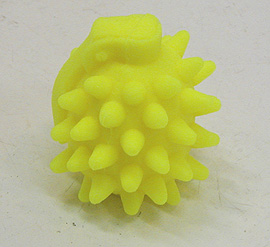
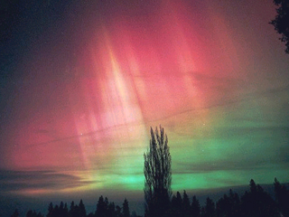
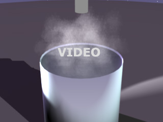

La fluorescéine émet dans le vert tandis
que différents tissus et papiers colorés avec d'autres substances irradient dans le violet (voir azurants
optiques). Ces substances sont bien connues depuis longtemps mais
d'autres sont venues compléter la palette. Beaucoup de corps sont
fluorescents, surtout parmi les molécules
organiques.

Différentes peintures fluorescentes sont maintenant disponibles dans le
commerce (notamment des peintures vinyliques).
Elles sont toutes réputées fugaces, mais certains choix peuvent atténuer ce
phénomène, comme une coloration "dans la masse" (voir photo ci-contre, une
Sida-grenade (2003) de Yves Bodiou, résine
élastomère silicone transparente teintée).
De nombreux minéraux naturels émettent des lumières aux couleurs variées
lorsqu'ils sont excités par un éclairage UV ou des rayons X.
Mentionnons par exemple le spathfluor, utilisé en verrerie, objet d'un
article et d'un lien externe dans le glossaire.
Au
sujet d'objets fluorescents contemporains, lire absolument :
Pourquoi le Post-it
® est-il fluo ? sur Pourpre.com
La phosphorescence
Ce qui distingue la phosphorescence des autres
phénomènes de luminescence est la durée : plusieurs secondes, plusieurs
minutes, plusieurs heures ou davantage sans apport extérieur d'énergie.
Longtemps, très longtemps, trop longtemps (de 1900 à 1960 pour la plus
grosse part), les peintures phosphorescente ont été réalisées avec du
radium,
un élément extrêmement radioactif plus dangereux que l'uranium,
mêlé à des produits luminescents. Les rayonnements énergétiques du radium
excitent des molécules qui réémettent dans le visible. En quelque sorte la
source d'énergie est intégrée (rayons X) et pratiquement permanente. En France, il existait encore en 1989 une
usine (Bayard, fabricant de réveils à Saint-Nicolas d'Aliermont, près de
Dieppe) où l'on employait ce type de produits. L'endroit a été nettoyé mais
le sous-sol est certainement durablement contaminé.
Le radium a été remplacé par le tritium, moins dangereux (moins énergétique
et de durée de vie moins longue). Puis, serait apparu un
conditionnement particulier du tritium, annoncé comme plus sûr.
 Mais les pigments phosphorescents sont aujourd'hui fabriqués sur une base
Mais les pigments phosphorescents sont aujourd'hui fabriqués sur une base
* de sulfure de
zinc, la wurtzite, de formule de base ZnS
+ un métal lourd
(gare aux incompatibilités potentielles avec les produits au plomb
si le produit pigmentaire est "mal lavé"),
* ou de scheelite, CaWO4,
* ou d'un autre sulfure alcalin
ou alcalinoterreux
comme CaS par exemple
* ou d'autres sels.
Sauf cas particuliers, ces produits ne sont pas radioactifs. Une matière
phosphorescente n'est pas vouée par définition à être radioactive.
Concernant ZnS + un métal lourd, signalons que les atomes de cuivre notamment
forment ce qui s'appelle des "centres F" (F comme Farbe, couleur en
allemand), qui sont responsables du piégeage des électrons et donc de la
phosphorescence.
En ce qui concerne la qualité des pigments, la quantité d'impuretés métalliques semble déterminante (il s'agirait
d'autant de pièges, d'obstacles).
La phosphorescence est nettement déterminée par la
température (voir thermoluminescence
ci-dessous) : le froid la gèle, la chaleur l'excite, l'agitation
thermique favorisant semble-t-il le changement d'état des électrons. Les rayons
infrarouges ont un effet spécialement brutal.
Les invalidants de la phosphorescence,
sont l'humidité (les fabricants conseillent un taux inférieur à 50% pour la
conservation), le broyage excessif (trop fin, le pigment perd ses propriétés) et
les rayons ultraviolets (gare au soleil). Les liants à dominance aqueuse et/ou
chimiquement neutres, sont souvent employés. Nous savons par ailleurs par
expérience, grâce à plusieurs intervenants maintenant, que certains moulages en
résine, malgré leur chimie complexe, peuvent parfaitement incorporer des
pigments phosphorescents. Il est conseillé dans tous les cas de pratiquer des
tests préliminaires.
La puissance de la phosphorescence
varie en fonction de deux "facteurs temps" : la durée de chargement d'un bon pigment phosphorescent est de
l'ordre de quelques minutes ; le temps de phosphorescence proprement dit
peut être moyen ou très court, rarement long.
Chromatisme : les pigments phosphorescents sont le plus souvent d'une
couleur jaune-vert. On peut mentionner des matériaux ayant d'autres
couleurs que l'on classe parfois parmi les matières phosphorescentes (les
pigments présents dans les tubes cathodiques, par exemple), mais la
brièveté extrême des phénomènes photoélectriques en jeu ne semble pas
justifier cet apparentement.
Terminons ce passage dédié à la
phosphorescence par une intéressante question d'une lectrice de Dotapea et
la réponse donnée par Jean-Louis
en marge des Dialogues :
Je suis particulièrement intéressée par la phosphorescence. Elle
dépend de plusieurs paramètres :
- l'intensité de l'éclairage,
- la longueur d'ondes des photons arrivant sur le matériau,
- la durée d'exposition,
- la température : avec la chaleur, l'agitation thermique favorise
l'excitation des électrons.
Plus l'éclairage est long et intense et plus le phénomène durera.
Cependant savez-vous s'il existe une formule (reliant les paramètres
cité ci dessus + d'autres que j'aurais sûrement oublié) qui permet de
déterminer le temps pendant lequel le matériaux phosphorescent va
continuer à émettre des photons ?
Jean-Louis : Ce n'est pas simple.
1) il n'y aura pas deux matériaux identiques, c'est déjà une
variable importante.
2) la question commence avec l'excitation. Il faut exciter les
électrons pour les faire passer sur un niveau supérieur. Le processus va
dépendre : de la puissance de l'éclairage, de la longueur d'onde, de la
quantité de lumière réellement absorbée par le matériau (état de surface,
réflectance, longueur de pénétration, température,...). La durée de
l'excitation n'est pas vraiment un paramètre, contrairement à ce que l'on
pourrait penser. Si on éclaire longtemps, les électrons commencent à se
désexciter même pendant l'éclairement, donc on perd à droite ce qu'on
gagne à gauche.
3) ensuite on coupe l'excitation et ça réémet de la lumière par
phosphorescence. La probabilité qu'un électron donné se désexcite et
renvoie un photon suit une loi exponentielle. Tous les électrons ne vont
pas réémettre de la lumière après un temps t, auquel cas on pourrait
définir facilement une durée de vie. Les uns après les autres, presque
selon leur humeur, ils vont envoyer un photon. Ca va durer "un certain
temps", mais il y aura toujours de la lumière émise après par d'autres
électrons moins rapides.
C'est comme la radioactivité, ça décroît exponentiellement, mais il en
reste toujours. Ceci mis à part, on peut définir ce qu'on appelle "un
temps caractéristique", mais il est évidemment dépendant du matériau,
notamment de sa structure électronique. Autres paramètres : la pureté
chimique, la température, la lumière ambiante,...
Voir aussi : La
phosphorescence alimentaire, divers photoluminescence in Courrier des Lecteurs.
Emplois
spécifiques, autres phénomènes
On mentionnera d'abord un phénomène particulier et original de luminescence :
la
triboluminescence. Dans ce cas, ce n'est pas un apport photonique mais
une action mécanique (frottement, écrasement) qui fournit l'énergie initiale.
Certains cristaux sont triboluminescents. Cette propriété extraordinaire peut
parfaitement être exploitée dans les domaines de la sculpture et des
installations.
L'électroluminescence est aussi un phénomène
de photoluminescence original. L'apport initial d'énergie est effectué par un
champ électrique. Le champ d'application dans le champ
de l'art contemporain n'est pas négligeable. En dehors des minéraux
naturels, la technologie a pu produire des substances plastiques, parfois
élastiques, qui sont très faciles d'emploi. Le faible courant (quelques
dizaines de volts) qui passe dans le fil d'un simple combiné téléphonique peut être
utilisé.
La technologie de l'électroluminescence est toute jeune, mais étant
donné les enjeux - notamment la transformation d'un signal électrique en
signal optique sans réchauffement -, elle a produit en peu d'années des résultats extraordinaires.
Moins extraordinaire, plutôt ordinaire même, une application simple, assez répandue,
est bien connue : des systèmes
d'éclairages censés imiter la lumière du jour sont, comme d'autres
"néons", associés à des mélanges de
sulfures alcalino-métalliques
ou d'autres composés
à très courte durée de photoluminescence (fluorescents).
Leur réel avantage consiste en fait à présenter un rapport qualité/prix
très relativement correct par rapport notamment à des systèmes d'éclairage désuets et
chromatiquement misérables comme les "néons" classiques. Certains
artistes utilisent ces derniers. Mais que sont ces vieux néons, comment
fonctionnent-ils ?
Dans un tube à néon, un gaz
(argon/mercure, néon/xénon, néon/sodium pour les éclairages publics, etc.) émet
des ultraviolets sous l'action du courant électrique. Ces UV sont seulement
destinés à exciter la fluorescence/luminescence des pigments qui sont collés sur
la paroi du tube. C'est en associant plusieurs pigments que l'on peut (plus ou
moins) obtenir une lumière blanche ou dite "solaire" par
synthèse additive, c'est à dire par un
artefact sans commune mesure avec le très riche
spectre solaire.
(voir aussi
Les lampes à plasma)
Un principe relativement semblable est utilisé pour les les tubes TV ou
informatiques dits "tubes cathodiques"
ainsi que différents matériels comparables : les
électrons qui frappent les pigments de l'écran excitent leur luminescence. Pour
chaque pixel de l'écran il y a 3 pigments : un rouge, un vert et bleu (tout à
fait visibles avec une loupe) qui reconstituent les différentes couleurs par
synthèse additive grâce à une excitation
proportionnelle sélective de chacune des trois couleurs.
Beaucoup de produits électroluminescents - et phosphorescents, voir
ci-dessus - semblent basés sur ZnS + un composant métallique lourd, mais il existe
aussi une
importante quantité de minéraux naturellement électroluminescents, comme le
diamant bleu par exemple.
La thermoluminescence, elle, n'est pas une
faculté d'accumulation d'énergie, mais plutôt une aptitude à libérer
celle-ci sous l'effet d'un échauffement. C'est un épiphénomène de la
phosphorescence (voir ci-dessus).
La chimioluminescence.
Certains corps, dont le Luminol ® (3-aminophthalhydrazide, voir
lien externe), se
décomposent en donnant des produits dans un état excité. La désexcitation de ces
produits produit de la lumière.
Ces substances sont commercialisées dans des tubes qui contiennent les
réactifs et qui s'illuminent quand on brise
une ampoule scellée à l'intérieur. "Lumières froides" (éclairages dégageant un
minimum d'énergie calorique) ou Cyalume ®. Elles sont vendues sur le web, dans
les magasins pour marins, explorateurs et différents corps de métiers, en
plusieurs couleurs. On en fait aussi des colliers lumineux à destination
festive.
Au sujet des minéraux photoluminescents - auxquels des artistes
semblent s'intéresser de près dans le monde entier -, nous conseillons à nos
chers visiteurs une promenade sur le très remarquable site
reocities.com/RainForest/9911
(lien retrouvé en 2010).
Attention aux yeux !
Les aurores polaires
[refonte 2008]

Elles comptent elles aussi parmi les phénomènes de photoluminescence.
Leur exploitation est difficile dans le domaine des arts plastiques. Dans le
domaine du sky-art ou du land-art, seul un "jeu" avec le phénomène naturel semble pour le moment accessible.
I.
Aurores provoquées
"L'état de l'art" dans ce domaine semble se réduire à de très modestes points
lumineux que des scientifiques ont réussi à faire apparaître dans l'ionosphère
en déchaînant la puissance des émetteurs du projet américain HAARP (Gakona,
Alaska).
Ce projet (voir
site) à capitaux militaires consiste à exciter des régions de l'ionosphère à
l'aide de micro-ondes polarisées à haute
fréquence, émises grâce à une série d'antennes et une
quantité considérable d'énergie. Il fait par ailleurs l'objet de polémiques,
en particulier à cause de sa capacité annoncée d'engendrer, à partir de
l'ionosphère localement excitée, des émissions ELF (très basses fréquences, potentiellement
susceptibles d'altérer le comportement humain), mais aussi à cause de
l'intention clairement annoncée de l'initiateur, Bernard Eastlund (aujourd'hui
sorti du projet, voir
site), de contrôler différents phénomènes météorologiques (ouragans,
tornades).
Bien sûr, tout cela fait jaser. Mais nous ne souhaitons pas entrer dans cette
polémique planétaire hors-sujet.
Nous nous contenterons de quelques précisions permettant de se représenter les
échelles d'énergie.
Concernant la possibilité d'engendrer une aurore atmosphérique artificielle, on
lira dans la
FAQ du
site de HAARP l'intéressant passage "Can HAARP create an artificial aurora?",
soit en français "HAARP peut-il créer une aurore artificielle ?"
Traduction de ce passage :
« L'aurore naturelle est créée quand des particules à très haute énergie,
émises par le soleil, atteignent le voisinage de la terre, sont entraînées vers
les pôles magnétiques, et frappent les molécules de gaz de la haute atmosphère.
L'énergie en jeu dans ce processus est énorme mais entièrement naturelle et cela
a été un événement normal pendant l'histoire de la terre.
HAARP est tellement plus faible que ces processus naturels qu'il est incapable
de produire le type d'apparitions observées pendant une aurore. De toute façon
[however], des émissions optiques faibles et répétitives provoquées par
HAARP ont été observées (et rapportées dans la littérature scientifique) à
l'aide de caméras très sensibles. »
Effectivement - et ce n'est pas un secret -, en 2005 des scientifiques ont
réussi à faire apparaître de tout petits points lumineux par intervalles de 7,5
secondes. On a évoqué à l'époque la possibilité à terme d'éclairer des villes de
cette manière mais il y a de sérieuses raisons de douter, étant donné les
énergies à déployer, que ce fut bien là l'objectif de cette recherche qui après
tout n'était peut-être que fondamentale : savons-nous provoquer une micro-aurore ?
L'expérience a été effectuée au sein d'une aurore naturelle mais on mentionne
qu'elle pourrait aussi être produite en dehors (information non confirmée).
Pour terminer sur ce chapitre décidément lié à l'activité militaire,
signalons la possibilité de provoquer une aurore à l'aide d'une bombe à
hydrogène. L'expérience (projet Starfish) a été réalisée à l'aide d'une charge
explosive particulièrement considérable de 1,45 mégatonnes à 400 km à la
verticale de l'atoll Johnston (USA) le 9 juillet 1962 vers minuit heure locale.
L'aurore était visible de Honolulu, à environ 1 200 km (horizontaux) de là. Il
est possible de trouver sur des sites variés différentes photos de ce spectacle.
Ainsi, l'être humain peut tout à fait engendrer ce genre de
phénomènes. Il n'est même pas certain que HAARP soit véritablement "tellement
plus faible que ces processus naturels", s'agissant quand même de plusieurs
gigawatts.
II. Aurores entièrement de synthèse
avec l'aide
scientifique de Jean-Louis,
physico-chimiste au CNRS
Revenons à un traitement plus pacifique du sujet. Voici quelque temps dans
ces pages nous publiions un schéma décrivant une installation susceptible
d'engendrer une petite aurore artificielle. Nous nous sommes aperçus d'une
petite erreur qui nous a conduits à réexaminer la question.

Voici donc une série de schémas animés en imagerie de synthèse (cliquer sur
l'image).
Quelques précisions seront apportées ultérieurement.
Une site anglophone à visiter :
cliquer ici.
Rappel : Un apport très important a été ajouté dans le Courrier des Lecteurs
2010 première saison. Lien.
Toute personne souhaitant davantage d'informations peut nous contacter.
Retour
début de page